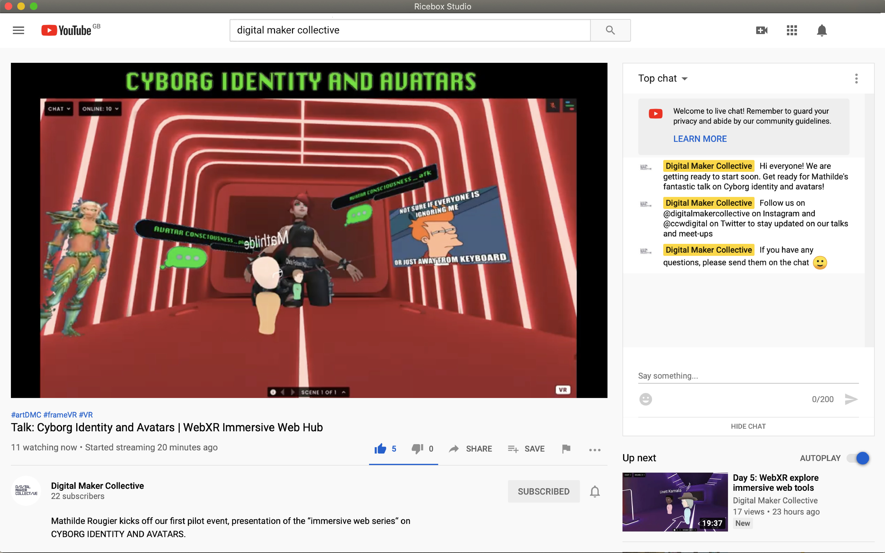
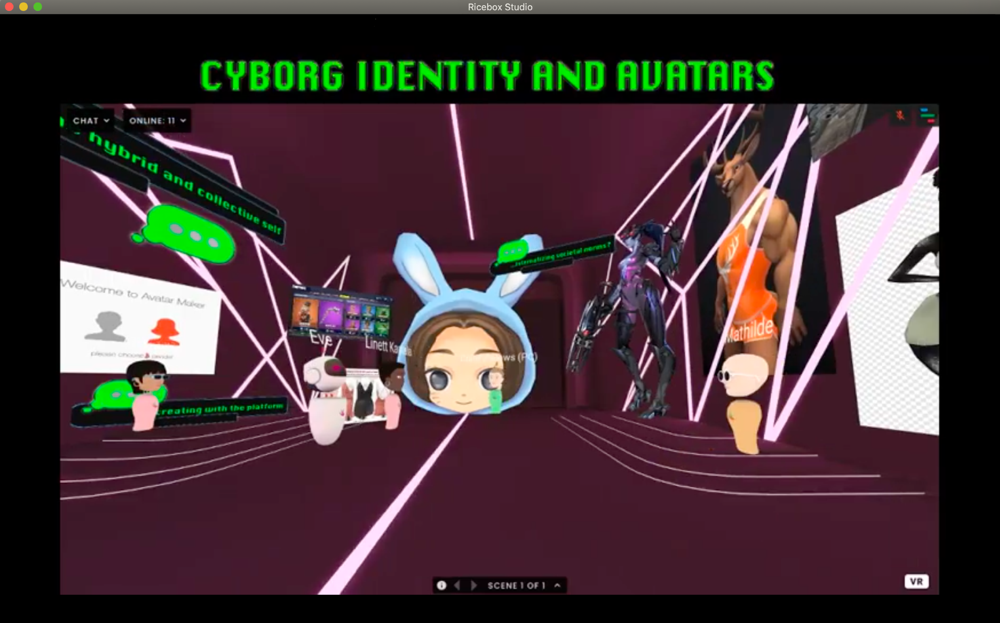
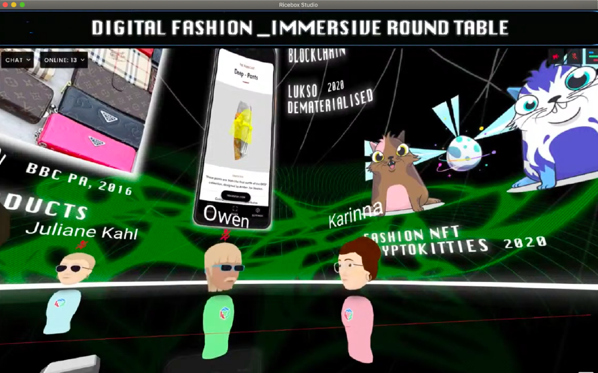
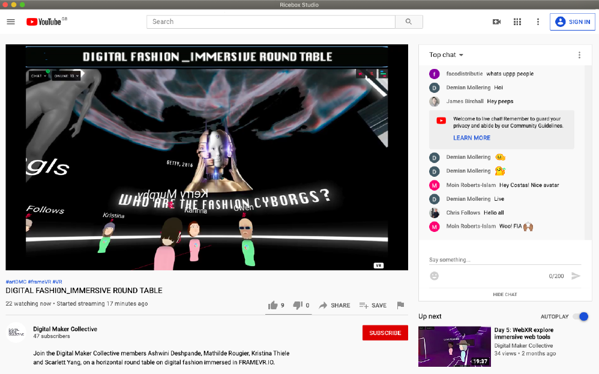

Recording of Cyborg Identity and Avatars
Recording of Digital Fashion Rountable (above)
Screenshots from the broadcasts (below)




DMC Immersive Web Series
DMC Immersive Web Series is a series of talks organised by the Digital Maker Collective in their virtual meeting hub. We have had the opportunity to get involved in livestreaming and creating the graphic cards for multiple events.
This series was piloted by Designer and XR Artist Mathilde Rougier with a talk on Cyborg Identity and Avatars.
Digital Fashion Immersive Roundtable was an evening of discussion on the FrameVR platform, facilitated by DMC members Owen Davies, Ashwini Deshpande, Mathilde Rougier, Kristina Thiele and Scarlett Yang. The panel focused on the concept and rise of fashion cyborgs, the carbon footprint of virtual fashion, digital fashion education at university and the concept of pixel ownership.Invited guests and speakers were XR artist and digital fashion designer Damara Inglês, founder and CEO of Responsive Fashion Institute Juliane Kahl, creative technologist at the Fashion Innovation Agency and London College of Fashion associate lecturer Costas Kazantzis, fashion designer and Central Saint Martins alumni Paul Aubrey Parnell, founder of The Fabricant Kerry Murphy and co-founder of The Dematerialised and digital fashion designer Karinna Nobbs.
Roles:
Broadcast Curation and Management